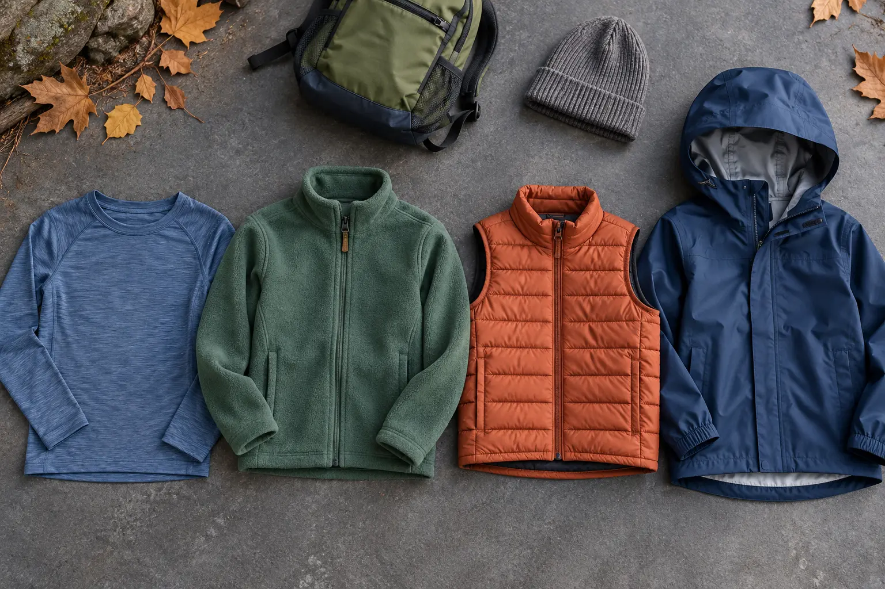

Base layer
Job: move moisture away from skin and stay comfortable under other layers.
Tradeoff: an overly tight or rough top becomes the problem; cotton holds moisture when wet.
GEAR GUIDE · COOL-WEATHER WALKS · SYSTEM BEFORE BRAND
Buy the missing job, not a matching outfit: manage sweat, add adjustable warmth, block wind or rain, and keep one dry reset layer where an adult can reach it.

NOAA explains that layers trap insulating air, a moisture-wicking first layer helps keep sweat away from skin, and a waterproof but breathable outer layer is useful in wet conditions. The National Park Service similarly recommends adjustable layers, wool or synthetic materials over cotton in cold wet conditions, and a wind- and waterproof outer layer when conditions warrant it. Those are system principles, not a universal shopping list or a temperature rating for a child.
Children run hot, stop suddenly, kneel in wet leaves and notice discomfort late. A useful system must adjust quickly. The adult should be able to add or remove one layer without emptying the whole pack, and the child must be able to move, see, hear and use the bathroom in the complete setup.
Check the hourly National Weather Service forecast, wind, precipitation timing and sunset. Then name the exposure: sheltered neighborhood loop, wooded trail, open ridge, wet gorge, long sports sideline or mostly stationary outdoor event. A 50°F sunny walk at an active pace is not the same clothing problem as a windy 50°F overlook.
Use the family weather cutoff plan to choose go, shorten or leave. Clothing cannot make lightning, severe wind, unsafe ice, floodwater, smoke or a closure acceptable. If the route has no quick exit, carry more margin and tell an outside person the plan.
Choose a soft, smooth garment that fits close enough to layer without bunching but does not restrict movement or leave deep marks. Compare the exact fiber content, seams, neck opening, sleeve length, care instructions and return terms. Wool blends and synthetic fabrics can both work; comfort, drying and skin tolerance matter more than a material slogan.
Do not buy a full base-layer wardrobe before one item survives a normal wear-and-wash cycle. A child who refuses the collar or overheats indoors will not become more cooperative at a trailhead. For mild fall conditions, an ordinary non-cotton athletic shirt the child already owns may fill the job.
A zip fleece makes temperature control easier because the child can vent before sweat builds. Check zipper comfort at the chin, sleeve reach, shoulder movement under a pack and the hem when the child crouches. A hood can add warmth but may interfere with hearing, peripheral vision or the shell hood; test the combination.
Fleece thickness is not a standardized warmth rating. Compare fabric weight only within meaningful maker data and remember that wind can pass through many fleeces. If the forecast is breezy, a light shell may add more usable comfort than a second thick fleece.
A light synthetic jacket or vest can help during snack stops, slow observation and the return when activity drops. A vest preserves arm movement and layers neatly but leaves arms exposed. A jacket provides more coverage but adds bulk under a shell. Down can be light and compressible, while synthetic insulation can be more forgiving around moisture; exact performance depends on construction and care.
Do not trust a retailer’s single temperature number as a promise. Warmth depends on wind, moisture, activity, food, fatigue, fit and the rest of the system. Avoid an oversized “grow into it” garment if the armholes, hem or hood interfere now. The right fit is the one that works on today’s child.
Read whether the finished garment is described as water-resistant or waterproof, whether seams are sealed, how the hood adjusts, and what the care label requires. A shell should fit over the planned base and midlayer without flattening insulation or pulling across shoulders. The hood must turn with the child’s head without covering eyes or ears.
Use the family rain-gear guide for the deeper jacket-versus-poncho decision. Loose ponchos and dangling cords can snag on branches or obscure feet, and some trails or activities make them a bad choice. The maker’s claim never replaces route judgment.
The family hiking-daypack guide keeps spare clothing reachable instead of buried. Pair the system with properly fitted hiking socks, footwear the child already knows and the glove decision guide when hands need their own layer.
Start slightly cool rather than sweaty. After ten minutes, stop and ask about neck, back, hands and feet. Vent or remove a layer before dampness spreads. At every snack stop, put warmth on before the child chills. If clothing becomes soaked, use the dry reset layer and take the shortest safe route out.
Warning signs of cold illness deserve immediate action. NPS identifies confusion, shivering, difficulty speaking and stiff muscles among hypothermia warning signs. Move to shelter, replace wet clothing, seek appropriate emergency help and follow current medical guidance. This page is a buying and setup framework, not medical advice.
Active dry-day child: base plus fleece, shell carried. Windy exposed route: base plus fleece and wind-blocking shell. Stop-and-look outing: base plus fleece with light insulation available. Wet forecast: base, modest warmth and a verified rain shell, plus a shorter route and dry spare. Child with sensory or medical needs: involve the child in fit testing and seek clinician or occupational-therapy guidance when needed.
MAKE THE DAY COUNT
Build the plan your family can finish well, then leave enough energy for the next part of the day.
More family plansTHE USEFUL STUFF
These are practical categories to compare—not a reason to overpack. Check fit, specifications and current reviews before buying.
Paid links: As an Amazon Associate I earn from qualifying purchases. You pay no additional cost.
Compare fiber content, seam comfort, neck opening, sleeve length, care instructions and return terms on the actual child.
See current options → COMPARE ON AMAZONCheck zipper comfort, shoulder movement, pack fit, fabric weight and whether the layer vents easily during active walking.
See current options → COMPARE ON AMAZONVerify the finished garment’s water-protection claim, seam construction, hood visibility, layer room and care requirements.
See current options →